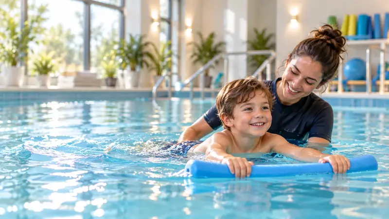

Гидротерапия для детей
Занятия в воде, которые объединяют движение, игру, уверенность и эмоциональную связь — с индивидуальной адаптацией под ребёнка.
Почему гидротерапия может быть значима для детей
Вода создаёт условия, отличные от условий на суше. Плавучесть, сопротивление и водные ощущения позволяют отрабатывать движения, равновесие, координацию и уверенность в игровой и приятной форме. Для многих детей сама по себе иная среда даёт возможность пробовать новое без чувства давления и с большим пространством для игры и успеха.
Как выглядит процесс
Мы начинаем со знакомства и понимания потребностей. Занятия адаптируются к уровню комфорта в воде, возможностям и поставленным целям. Прогресс происходит поэтапно, а акцент — на контакте, уверенности и положительном опыте наряду с профессиональной работой.
Преимущество Центра «Эден»
- Индивидуальный подход, а не единая стандартная программа
- Профессиональная и опытная команда, работающая с детьми
- Качественные бассейны и продуманная, ухоженная обстановка
- Небольшие группы и индивидуальный подход
- Вовлечение родителей по мере необходимости
- Возможность последовательного сочетания гидротерапии, лечебного плавания и других занятий в Центре «Эден»
Дети с РАС и с различными потребностями
Если требуется дополнительная адаптация, мы делаем упор на индивидуальный темп, постепенное знакомство с окружением, создание максимально возможной рутины и адаптацию способа работы под самого ребёнка. Нет единой методики, подходящей для всех, поэтому цель — найти тот подход, при котором ребёнок будет чувствовать себя в безопасности, понимать, что от него ожидают, и продвигаться в темпе, который ему подходит.

Преимущество Центра «Эден» для детей
Работа сочетает профессионализм с тёплой, не пугающей атмосферой. Ребёнок развивается в своём темпе, а команда стремится выстраивать уверенность, контакт и ощущения успеха.
Записаться на консультацию по подбору программы в Центр «Эден»